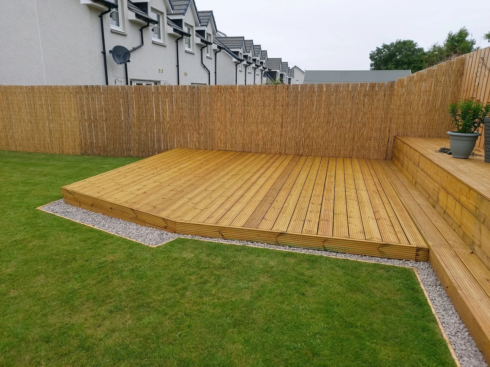

DeckingTimber decks for everyday outdoor living

FencingGarden boundaries and timber screening
Steps & LevelsDeck access for sloping garden spaces
PergolasTimber features and garden seating
GARDEN SPACES, IMPROVED
Make it useful.
Make it yours.
A place to sit out, a boundary with privacy, or steps that make a sloping garden easier to use. Affordable Fencing and Decking works on timber fencing and decking in Inverness.
Explore the project photos, from simple boundaries to seating decks and pergolas, and tell us what you would like to create.
Discuss your project →

SPACE TO UNWIND
Your garden retreat.
This timber pergola frames a seating deck beside the home. It is one example of how a deck can become a comfortable place to spend time outside.
Explore pergolas →RECENT WORK
Timber, transformed.
Fences, decks and garden details by Affordable Fencing and Decking. Tap a photo to view it in full.
BEFORE & AFTER
From patio to deck.
The old patio was removed and replaced with timber decking. Four steps connect the finished platform to the lower garden.
See the original space, the supporting framework and the completed deck.
Plan your decking →INVERNESS
Experience. Applied.
Affordable Fencing and Decking brings 15 years of experience to timber fencing and decking in Inverness, with a focus on quality and value.
01
Timber boundaries
Fencing that defines your space and gives the garden a finished edge.
02
Everyday outdoor living
Decking, seating areas and the steps that connect them.
03
Start with a conversation
Discuss your ideas, location, measurements and preferred finish.
REQUEST A QUOTE
What’s your idea?
Tell us about your fence or deck, where the property is and the space available. The form opens WhatsApp with your details ready to send. Add photos there to help explain the work.
affordablefencinganddecking@gmail.com
Your details are only shared when you send the prepared message. Privacy information.
GOOD TO KNOW
A few answers.
Where are you based?
The business is based in Inverness. Send your postcode to confirm availability for the location of your project.
What work can I enquire about?
Timber fencing and decking, including steps, levels and pergola projects shown in the portfolio.
Can you help with a sloping garden?
The supplied decking project includes four steps between the deck and lower garden. Send photos and approximate measurements to discuss your levels and access.
Can you replace an old patio with decking?
The featured project shows an old patio replaced with timber decking, with four steps connecting the new platform to the garden.
What should I include in a quote request?
The service, postcode, approximate dimensions and a description of the work. Add photos to the WhatsApp message, or contact the business by phone or email.
Can a fence and deck be discussed together?
Yes. Share the overall layout and explain which parts of the garden you would like to change.
AFFORDABLE FENCING AND DECKING
Enjoy the outdoors.
Inverness · Fencing & Decking